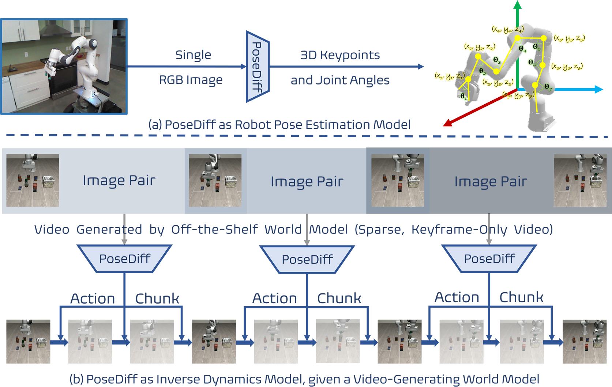

Haozhuo Zhang 张浩卓
First-Year PhD Student, Recipient of the Dean's Doctoral Scholarship Award
Department of Computer Science, School of Engineering
The University of Manchester
Email: haozhuo.zhang@postgrad.manchester.ac.uk
Google Scholar|
Haozhuo Zhang 张浩卓 First-Year PhD Student, Recipient of the Dean's Doctoral Scholarship Award Department of Computer Science, School of Engineering The University of Manchester Email: haozhuo.zhang@postgrad.manchester.ac.uk Google Scholar |
|
I am a first-year PhD student at Department of Computer Science, School of Engineering, the University of Manchester, supervised by Prof. Wei Pan and Prof. Michele Caprio.
|
 |
PoseDiff: A Unified Diffusion Model Bridging Robot Pose Estimation and Video-to-Action Control |
|
HumanoidVerse: A Versatile Humanoid for Vision-Language Guided Multi-Object Rearrangement |
|
Hand1000: Generating Realistic Hands from Text with Only 1,000 Images |
|
FLIP: Flow-Centric Generative Planning for General-Purpose Manipulation Tasks |
|
Mitigate Catastrophic Remembering via Continual Knowledge Purification for Noisy Lifelong Person Re-Identification |